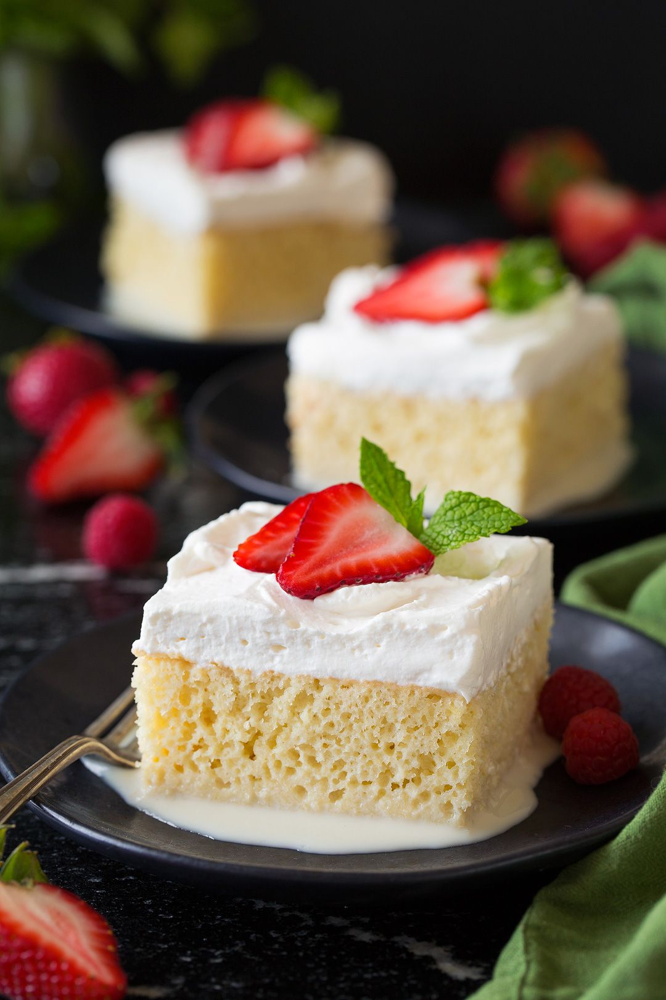

This dessert will give you a real cake up call with its moist, creamy, and delicious ingredients. A piece of this ultimate celebration cake will bring out your guest's electric moves on the dance floor!

Ingredients:
• 1 ½ cups all-purpose flour • 1 teaspoon baking powder •½ cup unsalted butter • 1 cup white sugar • 5 eggs • ½ teaspoon vanilla extract • 2 cups whole milk • 1 (14 ounce) can sweetened condensed milk • 1 (12 fluid ounce) can evaporated milk • 1 ½ cups heavy whipping cream • 1 cup white sugar • 1 teaspoon vanilla extract
Recipe:
1. Preheat the oven to 350 degrees F (175 degrees C). Grease and flour a 9x13-inch baking pan. 2. Sift flour and baking powder together; set aside. 3. Beat sugar and butter together in a large bowl with an electric mixer until light and fluffy. Add eggs and vanilla; beat well. Add flour mixture, about 1/2 cup at a time, mixing until well blended. Pour batter into the prepared pan. 4. Bake in the preheated oven until a toothpick inserted into the center comes out clean, about 30 minutes. Pierce cake all over with a fork; let cool to room temperature. 5. Mix whole milk, condensed milk, and evaporated milk together in a bowl; pour over the top of the cooled cake and allow to soak in. 6. Whip cream, remaining 1 cup of sugar, and 1 teaspoon vanilla in a chilled glass or metal bowl with an electric mixer until thick. Spread over the top of the filling. Keep cake refrigerated until serving. 7. Serve this cake topped with homemade whipped cream and enjoy!